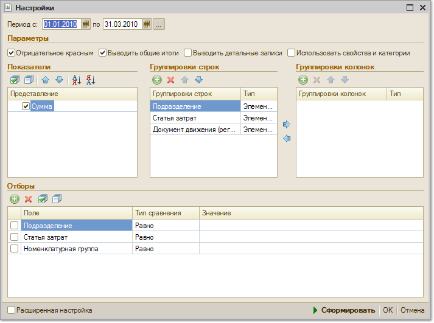

По кнопке "Настройка" вызывается форма настройки параметров отчета:

Группировки строк и колонок
В отчете возможна группировка по подразделениям, статьям затрат, номенклатурным группам и заказам.
Показатели
Показатели выводятся по данным управленческого учета, в валюте управленческого учета.
Отборы
Данные отчета могут быть отфильтрованы по условиям, заданным в блоке "Отборы".
Чтобы добавить вид отбора, щелкните кнопку "Добавить" и выберите поле, по которому будет производиться отбор. Затем задайте Тип сравнения, который определит область поиска заданного значения. Значение отбора выбирается из соответствующего справочника. Значением отбора может быть как отдельный элемент, так и группа и список выбранных элементов.
Вид отбора активен, только если в строке вида отбора установлен флаг.